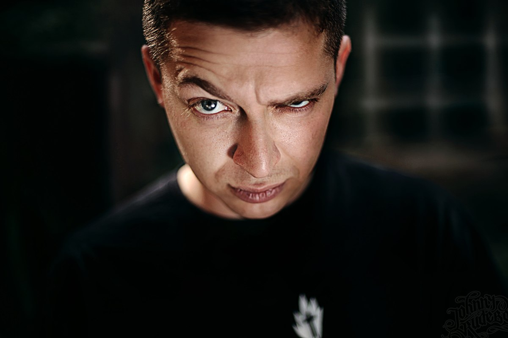

Oxxxymiron (Оксимиро́н; настоящее имя — Миро́н Я́нович Фёдоров; род. 31 января 1985, Ленинград, СССР) — российский рэп-исполнитель, поэт-песенник и гражданский активист. Является одним из наиболее коммерчески успешных рэп-исполнителей России. Его альбомы «Вечный жид» (2011) и «Горгород» (2015) внесли значительный вклад в историю русского рэпа. Творчество исполнителя ряд исследователей и критиков относят к «интеллектуальному рэпу».
Родился 31 января 1985 года в Ленинграде в еврейской семье. Его отец — Ян Валерьевич Фёдоров, физик-теоретик, в 1994 году защитил в Петербургском институте ядерной физики имени Б. П. Константинова докторскую диссертацию на тему «Статистические свойства собственных функций случайных одночастичных гамильтонианов». Мать — библиотекарь. Учился в петербургской школе № 185. Когда Мирону было 9 лет, его семья переехала в город Эссен (Германия), и Мирон поступил в гимназию имени Марии Вехтлер (Maria-Wächtler-Gymnasium[нем.]). По его словам, у него были напряжённые отношения с немецкими одноклассниками; эта тема позже нашла отражение в его ранней песне «Последний звонок». Первые попытки читать рэп Мирон предпринял в возрасте 13 лет под псевдонимом Миф (сокращение от Мирон Фёдоров).
У нас была группа, название которой я забыл, состояли в ней Миф и Сага. Сага так и не написал ни одной строчки и впоследствии сторчался. А я придумал русский рэп. То есть натурально был уверен, что я первый человек, читающий рэп по-русски (интернета у меня не было, а русскоязычных эмигрантов, которые могли бы поколебать мою уверенность, в Германии тогда ещё было достаточно мало).
Оксимирон для Keep It Real. После одной из поездок на родину в 14 лет уверенность Мирона в том, что он родоначальник рэпа на русском языке, пропала.
Когда Мирону было 15 лет, его семья переселилась в город Слау (Великобритания). Здесь, больше не имея проблем с одноклассниками, он усиленно взялся за учёбу. Вскоре учительница истории — выпускница Оксфордского университета — предложила ему попробовать поступить в Оксфорд после окончания школы. В 2004 году, подав документы и пройдя собеседование, Мирон поступил в университет на факультет английского языка и литературы.
Я разговаривал на смеси так называемого «королевского» и книжного английского с немецким акцентом. Я слушал американский рэп, поэтому использовал много сленговых выражений. Я говорил такие слова, как «innit» во время моего собеседования в Оксфорде — думаю, что это одна из причин, по которой они приняли меня.
В 2006 году получил диагноз «маниакально-депрессивный психоз» и был исключён по этой причине из вуза, но поступил повторно. В июне 2008 года получил диплом Оксфорда[20] по специальности «средневековая английская литература».
После учёбы в Оксфорде Мирон переехал жить в Ист-Энд и начал поиски работы. Из-за «чрезмерной квалификации» он не смог найти работу по профессии. Как утверждает рэпер, он «работал кассиром, переводчиком, грузчиком, гидом, ларёчником, репетитором, конферансье, офисным планктоном и консультантом с копытом». Новый круг общения, состоявший из русскоязычных эмигрантов, подтолкнул Мирона вернуться к хип-хопу. Он стал заниматься музыкой под псевдонимом «Oxxxymiron», появившимся как сочетание имени с литературным термином «оксюморон» (англ. oxymoron) и утроенной —X", отсылающей к большому количеству нецензурной лексики в его песнях.
С 2013 года живёт в Санкт-Петербурге.
В 2015 году был выпущен сериал «Лондонград», созданный во главе со сценаристом Михаилом Идовым на основе приключений Мирона в Лондоне.
После 24 февраля 2022 года уехал из России, однако, в сентябре того же года возвращался в Санкт-Петербург для съёмок клипа.
Источник.* выполняет функции иностранного агента.